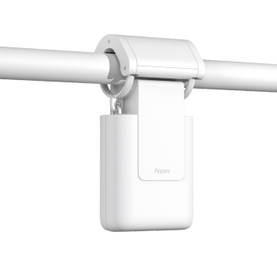
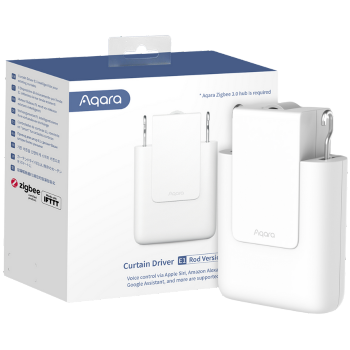

Curtain Driver E1
- Simply attach the Curtain Driver to the rail and enjoy automated control of your existing curtains with triggers based on weather, time, or other Aqara devices.
- Available in two versions - Rod Version and Track Version
Easy Installation |
Up to 1-Year Battery Life |
Maximum Load of 12kg |
USB-C for Charging or Power Supply |
Built-in Light Sensor |
Product Info
Description
TThe Aqara Curtain Driver E1 is a compact, smart motor designed to automate the opening and closing of curtains with ease. Compatible with most common curtain rails, it can be mounted in minutes without the need for any tools or complex installation. Once installed, it can be controlled remotely via the Aqara Home app or through voice commands with compatible platforms like Apple HomeKit, Amazon Alexa, and Google Assistant. Equipped with a quiet motor and a powerful battery that lasts up to a year on a single charge, the Curtain Driver E1 provides smooth, convenient operation for your curtains. It also offers customizable schedules, so you can set curtains to open at sunrise or close at bedtime, adding convenience and privacy while optimizing natural lighting in your space.
Key Features
- Up to 1-Year Battery Life:With energy-saving tech and a 6000 mAh battery, the Curtain Driver E1 can last up to a year without charging.
- Zigbee 3.0 Protocol:Fast, stable, and energy-efficient smart home tech for better stability, compatibility, and longer support.
- Popular Curtain Track Support:Supports most curtain rails; Rod Version works with all types, while Track Version supports U- and I-Rails.
- Built-in Light Sensor:Automatically adjusts curtains based on brightness; opens when it’s bright, closes when it’s dark.
- Maximum Load of 12 kg:Powerful motor handles heavy curtains, with a max load of 12 kg.
- Easy Installation:Tool-free setup; simply mount onto existing curtain rails.
- USB-C Charging/Power:Modern Type-C port for charging or continuous power (requires a free cable placement to avoid tangling).
- One-Button Remote Control:Control curtains via Aqara Home app, Aqara Mini Switch, or Aqara Cube T1 Pro.
- Ecosystem Support:Compatible with HomeKit, Alexa, Google, IFTTT, Alice, Marusya for voice control.
- Device Grouping:Control one or two Curtain Drivers per window, synced for simultaneous operation.
- Smart Home Automations:Set automations based on time, weather, or other Aqara devices for hands-free control.
- Adjustable Speed & Scenes:Customize motor speed for quieter operation and gradual curtain opening, simulating a sunrise effect.
Note:
* Actual battery life may vary depending on curtain weight, track length and friction
** Rod Version supports Rods, U-Rails and I-Rails. Track Version supports U-Rails and I-Rails.
Specifications
| Category | Curtain Control |
| Colour | White |
| Model | CM-M01 |
| Wireless Protocol | Zigbee 3.0 IEEE 802.15.4 |
| Dimensions | 140.5 × 96 × 44 mm |
| Operating Temperature | -10°C ~ 50°C |
| Operating humidity | 0-95% RH, no condensation |
| Battery Type | Lithium battery (not replaceable) |
| What is in the Box | Aqara Curtain Driver E1 × 1, USB-C to USB-A Cable × 1, User Manual × 1, Curtain Wheels (Track Version Only) |
Gallery
|  |  | |
| Front Image | Side Image | Product Box |
Automations and Complementary Products
Automatic Curtain Opening
Curtains open based on time, weather, lighting, or other Aqara devices. For example, they open slowly in the morning before you wake up, partially close when it’s too bright, and open before sunset to enjoy the view. All settings are customizable in the Aqara Home app.
| Required Automation Products: | Curtain Driver E1 |
 Hub M3 |
Curtains Close at Bedtime:
At bedtime, an Aqara Presence Sensor triggers the Curtain Driver E1 to close the curtains, enhancing comfort and privacy while you sleep.
| Required Automation Products: | Curtain Driver E1 |
Hub M3 |
 Presence Sensor FP2 |
Automatic Closure When Showering:
When the bathroom’s humidity rises, an Aqara Temperature and Humidity Sensor triggers the Curtain Driver E1 to close bedroom curtains, ensuring privacy when you exit the bathroom.
| Required Automation Products: | Curtain Driver E1 |
Hub M3 |
 Temperature and Humidity Sensor |
Product Support Documents
- Step by step installation instruction video (runtime 00:06:22): Installation Video
- Product User Manual (format PDF): User Manual
- Product FAQs (format PDF): Frequently Asked Questions